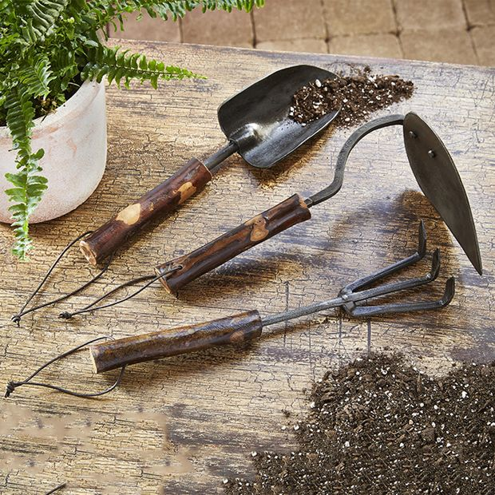

Gardening is important for a variety of reasons. It promotes environmental sustainability by encouraging the growth of plants that can improve air quality,
support biodiversity, and reduce carbon footprints. Gardening also provides access to fresh, nutritious food, fostering healthier eating habits and reducing reliance on
store-bought produce. It can be a stress-reliever, offering a peaceful, rewarding activity that connects people with nature and promotes mental well-being. Additionally,
gardening helps conserve water, improve soil health, and encourages biodiversity, contributing to the overall health of the ecosystem.

Welcome to Gardenology, your go-to resource for all things gardening! Whether you're a beginner or a seasoned grower, our site offers expert advice on a wide
variety of crops and plants, sustainable gardening techniques, and best practices to help your garden thrive. Get tips and tricks on how to set up your garden, plan
efficient crop rotations, and grow healthy, productive plants season after season. Search through our plant catalogue to find crops that will work best for you.
Play fun games and take some quizzes to show how much you've learned! Let us help you cultivate a garden that's both beautiful and bountiful!